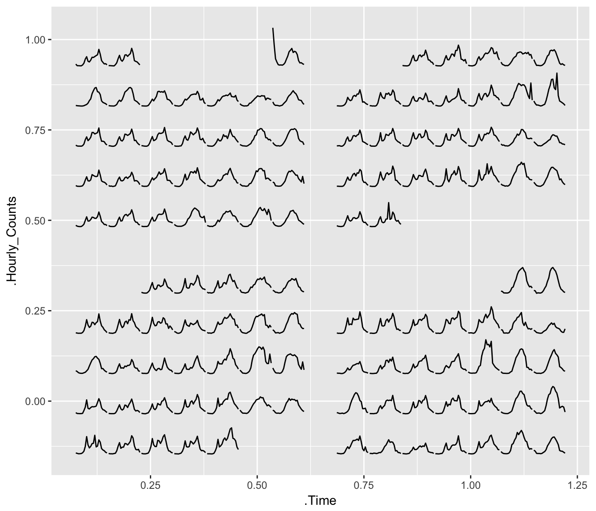
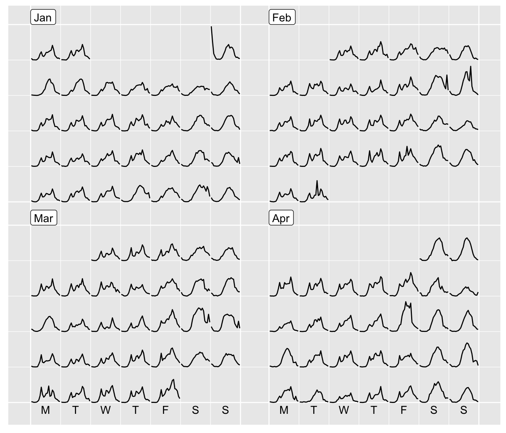
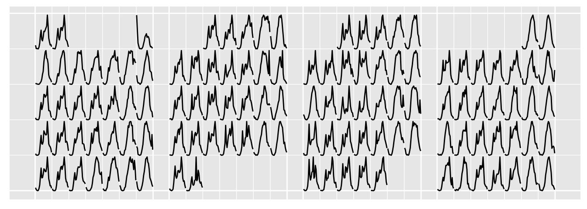
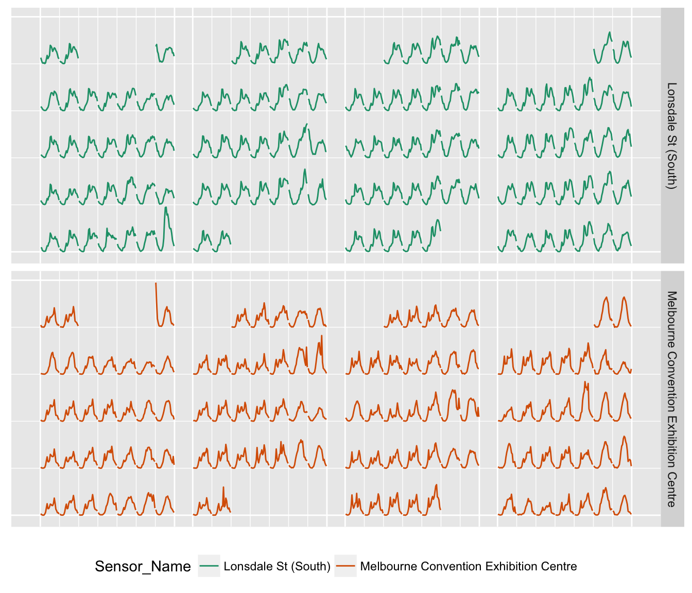
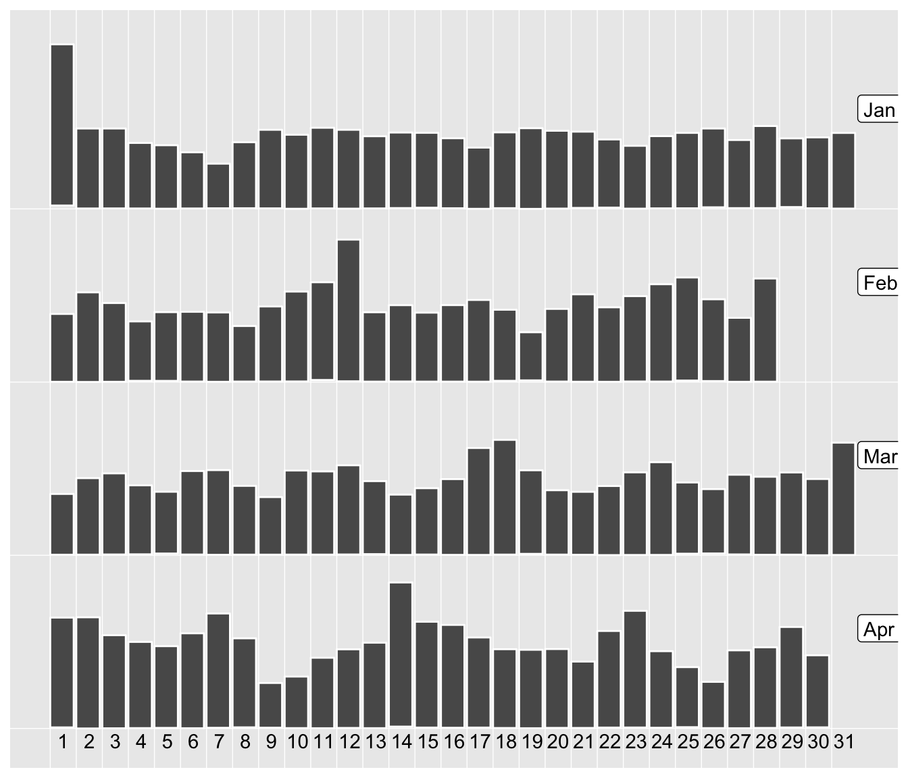
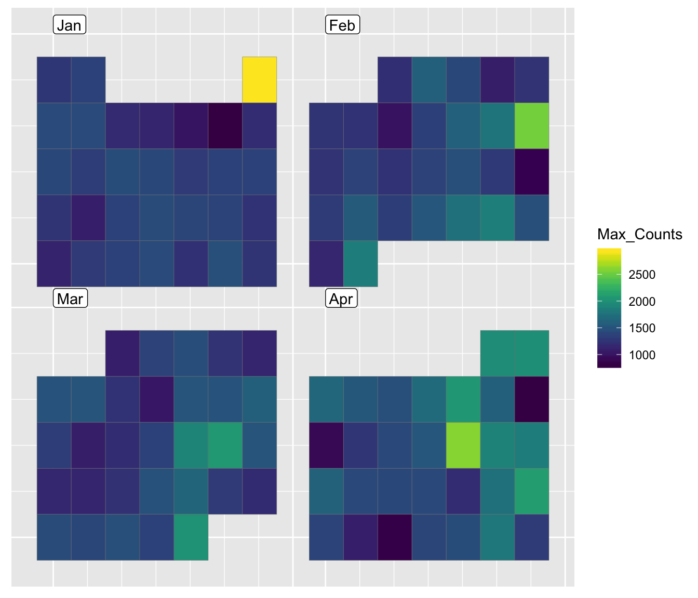

Calendar-based graphics turn out a useful tool for visually unfolding people’s daily schedules in details, such as hourly foot traffic in CBD, daily residential electricity demand and etc. It arranges the values according to the corresponding dates into a calendar layout, which is comprised of weekdays on the columns and weeks of a month on the rows for a common monthly calendar. The idea originates from Van Wijk and Van Selow (1999) and is implemented into a couple of R packages (ggTimeSeries and ggcal), yet they all are a variant of heatmap in temporal context. We extend the calendar-based graphics to a broader range of applications using linear algebra tools. For example, (1) it not only handles with data of daily intervals but also of higher frequency like hourly data; (2) it is no longer constrained to heatmap but can be used with other types of Geoms; (3) the built-in calendars include monthly, weekly, and daily types for the purpose of comparisons between different temporal components. The function frame_calendar returns the computed calendar grids as a data frame or a tibble according to its data input, and ggplot2 takes care of the plotting as you usually do with a data frame.
We are going to use Melbourne pedestrian data (shipped with the package) as an example throughout the vignette, which is sourced from Melbourne Open Data Portal. The subset of the data contains 7 sensors counting foot traffic at hourly intervals across the city of Melbourne from January to April in 2017.
library(dplyr)
library(viridis)
library(sugrrants)
pedestrian17 <- filter(pedestrian, Year == "2017")
head(pedestrian17)## # A tibble: 6 x 10
## Date_Time Date Year Month Mdate Day Time Sensor_ID
## <dttm> <date> <int> <ord> <int> <ord> <int> <int>
## 1 2017-01-01 2017-01-01 2017 January 1 Sunday 0 18
## 2 2017-01-01 2017-01-01 2017 January 1 Sunday 0 13
## 3 2017-01-01 2017-01-01 2017 January 1 Sunday 0 9
## 4 2017-01-01 2017-01-01 2017 January 1 Sunday 0 6
## 5 2017-01-01 2017-01-01 2017 January 1 Sunday 0 25
## 6 2017-01-01 2017-01-01 2017 January 1 Sunday 0 30
## # ... with 2 more variables: Sensor_Name <chr>, Hourly_Counts <int>We’ll start with one sensor only–Melbourne Convention Exhibition Centre–to explain the basic use of the frame_calendar. As it attempts to fit into the tidyverse framework, the interface should be straightforward to those who use tidyverse on a daily basis. The first argument is the data so that the data frame can directly be piped into the function using %>%. A variable indicating time of day should be mapped to x, a value variable of interest mapped to y. date requires a Date variable to organise the data into a correct chronological order . See ?frame_calendar for more options. In this case, Time as hour of day is used for x and Hourly_Counts as value for y. It returns a data frame including newly added columns .Time and .Hourly_Counts with a prefix “.” of the variable names. These new columns contain the rearranged coordinates for the calendar plots later.
centre <- pedestrian17 %>%
filter(Sensor_Name == "Melbourne Convention Exhibition Centre")
centre_calendar <- centre %>%
frame_calendar(x = Time, y = Hourly_Counts, date = Date, calendar = "monthly")
head(centre_calendar)## # A tibble: 6 x 12
## Date_Time Year Month Mdate Day Time Sensor_ID
## <dttm> <int> <ord> <int> <ord> <int> <int>
## 1 2017-01-01 00:00:00 2017 January 1 Sunday 0 25
## 2 2017-01-01 01:00:00 2017 January 1 Sunday 1 25
## 3 2017-01-01 02:00:00 2017 January 1 Sunday 2 25
## 4 2017-01-01 03:00:00 2017 January 1 Sunday 3 25
## 5 2017-01-01 04:00:00 2017 January 1 Sunday 4 25
## 6 2017-01-01 05:00:00 2017 January 1 Sunday 5 25
## # ... with 5 more variables: Sensor_Name <chr>, Hourly_Counts <int>,
## # Date <date>, .Time <dbl>, .Hourly_Counts <dbl>Consequently, .Time and .Hourly_Counts are mapped to the x and y axes respectively grouped by Date when using geom_line(). The transformed .Time and .Hourly_Counts variables no longer carry their initial meanings, and thereby their values are meaningless.
p1 <- centre_calendar %>%
ggplot(aes(x = .Time, y = .Hourly_Counts, group = Date)) +
geom_line()
p1
To make the plot more accessible and informative, we provide another function prettify to go hand in hand with frame_calendar. It takes a ggplot object and gives sensible breaks and labels. It can be noted that the calendar-based graphic depicts time of day, day of week, and other calendar effects like public holiday in a clear manner. (NOTE: prettify works better with line and point geoms at this stage.)
prettify(p1)
The scaling is controlled by the scale argument: NULL (the default) suggesting to be scaled globally; free to be scaled for each daily block individually; free_wday to be scaled conditional on each weekday; free_mday to be scaled conditional on each day of month. The code snippet below shows the scaling by weekdays. We can easily compare the magnitudes across Mondays and so on.
centre_calendar_wday <- centre %>%
frame_calendar(x = Time, y = Hourly_Counts, date = Date, calendar = "monthly",
scale = "free_wday")
p2 <- ggplot(centre_calendar_wday, aes(
x = .Time, y = .Hourly_Counts, group = Date)) +
geom_line()
prettify(p2)
group_by
The frame_calendar function can be naturally combined with group_by, and hence the grouped variable has its own scale.
grped_calendar <- pedestrian17 %>%
group_by(Sensor_Name) %>%
frame_calendar(x = Time, y = Hourly_Counts, date = Date, ncol = 4)
grped_calendar %>%
ggplot(aes(x = .Time, y = .Hourly_Counts, group = Date)) +
geom_line() +
facet_grid(Sensor_Name ~ .)
It’s not necessarily working with lines but other geoms too. We aggregate hourly counts to daily highs and lows, and in turn the time of day variable is dropped. But we could also use frame_calendar to get the calendar layout by simply passing integer 1 to x meaning “identity” across days. y allows multiple variables to be passed. Using the daily calendar instead, we use rectangular geom to represent daily maximums and minimums. As x doesn’t take a variable, .x is presented.
centre_daily <- centre %>%
group_by(Date) %>%
summarise(
Max_Counts = max(Hourly_Counts),
Min_Counts = min(Hourly_Counts)
) %>%
ungroup()
centre_daily_calendar <- centre_daily %>%
frame_calendar(x = 1, y = c("Min_Counts", "Max_Counts"), date = Date,
calendar = "daily")
head(centre_daily_calendar)## # A tibble: 6 x 6
## Max_Counts Min_Counts Date .x .Min_Counts .Max_Counts
## <dbl> <dbl> <date> <dbl> <dbl> <dbl>
## 1 2930 61 2017-01-01 0.00000000 1.006487 1.316667
## 2 1432 8 2017-01-02 0.03333333 1.000757 1.154712
## 3 1432 9 2017-01-03 0.06666667 1.000865 1.154712
## 4 1175 8 2017-01-04 0.10000000 1.000757 1.126926
## 5 1134 4 2017-01-05 0.13333333 1.000324 1.122493
## 6 1008 8 2017-01-06 0.16666667 1.000757 1.108871p3 <- centre_daily_calendar %>%
ggplot() +
geom_rect(aes(
xmin = .x, xmax = .x + 0.03,
ymin = .Min_Counts, ymax = .Max_Counts
), colour = "white")
prettify(p3)
If both x and y are given as 1, only calendar grids are returned. A heatmap therefore can be drawn.
centre_max_calendar <- centre_daily %>%
frame_calendar(x = 1, y = 1, date = Date, calendar = "monthly")
head(centre_max_calendar)## # A tibble: 6 x 5
## Max_Counts Min_Counts Date .x .y
## <dbl> <dbl> <date> <dbl> <dbl>
## 1 2930 61 2017-01-01 0.53461538 0.9269231
## 2 1432 8 2017-01-02 0.07307692 0.8158120
## 3 1432 9 2017-01-03 0.15000000 0.8158120
## 4 1175 8 2017-01-04 0.22692308 0.8158120
## 5 1134 4 2017-01-05 0.30384615 0.8158120
## 6 1008 8 2017-01-06 0.38076923 0.8158120centre_max_calendar %>%
ggplot(aes(x = .x, y = .y)) +
geom_tile(aes(fill = Max_Counts), colour = "grey50") +
scale_fill_viridis()
As its name suggests, frame_calendar just does the computation for you and leaves the plotting to ggplot2. This lends itself to more possibilities and flexibilities of calendar-based visualisation. In addition, some of these plots shown above can be produced using facets on temporal units by ggplot2; however, frame_calendar coupled with ggplot2 is much faster than facet_* as it’s more lightweight. Lastly, it can handle with long historical temporal data easily on a limited screen space as a result of calendar-based arrangement.